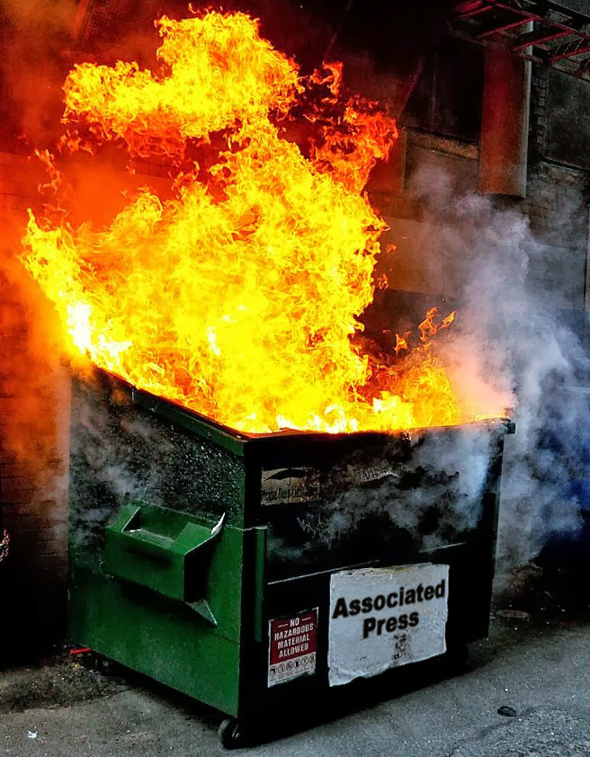

About the "Next Generation" Consoles
With the Xbox Series S/X, and PlayStation 5 on the horizon, what new innovations in games can we expect? The answer: None at launch! Or rather, none worth spending $500 on brand new hardware. For reference, here is the list of games avaiable at launch for each console that will not be available on current generation consoles (in one form or another):
PlayStation 5:
- Astro's Playroom (Pre-installed on the console)
- Demon's Souls (A remake of the PlayStation 3 game of the same name)
- Destruction AllStars (Vehicle destruction in an arena)
- GodFall (Yet another looting-action game)
- Sackboy: A Big Adventure (Friendly family platformer staring the protagonist of LittleBigPlanet)
That seems a little bit short. What does Xbox have for us?
Xbox Series S/X:
I stand corrected. If you do not care about fancy "Next-Gen" features and simply are here for new and exciting games, PlayStation 5 has some action and some platforming, but that is about it. Everything you can get on Xbox Series S and X, however, will also be available on the Xbox One that is currently available (and not for too much if you are willing to get one used.)
There is, however, one major upgrade that you will see if you buy a new console at launch: improved performance on current generation games.
Beside the obvioius decrease in load times (due to the Solid State Drives in both consoles), gameplay may feel smoother due to increased processor speed and graphics power. Some games may even be prettier, with PS5's boost mode, which will be available for select games, and the Series S/X's Auto-HDR implementation, which will make every game have HDR.
There is one more thing I would like to talk about: pricing. And not the price of the consoles, you. We are currently in the middle of an economic recession, and yet a fair amount of large video game publishers have decided is that NOW is the best time to raise video game prices by $10. However, they seek to make the transition easier by only raising the price of games on the new consoles.
This is especially attrocious considering most of the AAA video game publishers make more money off of the microtransactions in their games than they do from selling them. These microtransactions have been actively hurting the video games industry, and are not going away because these companies do not care if they have to use predatory tactics to extract as much money as humanly possible from people like you and me.
The final subject I would like to address is the emminent confusion between console versions. While Playstation mostly has this covered between the standard edition and the digital edition being $100 dollars apart and the digital edition just not having the disk drive, Xbox has a little bit more of an issue.
Xbox, like Sony, has two systems for the new generation. One is the Xbox Series S, a lower powered console with no disk drive for $200 cheaper than the Xbox Series X. Let me ask you one quesion: How are people supposed to know the difference between the Series S and Series X? The answer is, most won't. People will no doubt get confused come christmas time, and end up getting the wrong one. Here is a nice comparison table for you
| Console | Release Date | Storage | Disk Drive | Target Resolution |
|---|---|---|---|---|
| Playstation 5 Standard Edition | November 12 | 825GB | Yes | 2160p |
| Playstation 5 Digital Edition | November 12 | 825GB | No | 2160p |
| Xbox Series X | November 10 | 1024GB | Yes | 2160p |
| Xbox Series S | November 10 | 1024GB | No | 1080p/1440p |
All in all, the launch of the PlayStation 5 and the Xbox Series S/X can be summed up in one image, just like the rest of the world at the moment.
